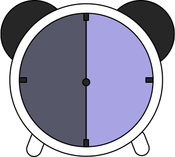
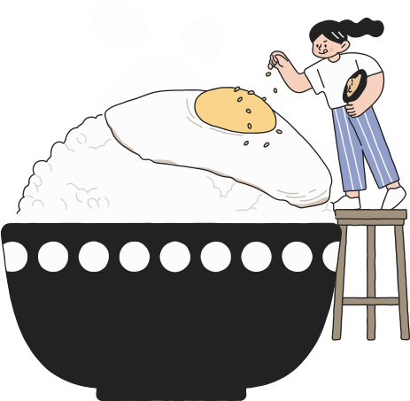

멜팅온 맞춤 효소 찾기
*효소, 고민되세요?
내 식습관에 맞는 효소 찾기
식사습관
Q1. 하루에 식사를 몇 회나 하십니까?
Q2. 아침 식사를제대로 하십니까?
Q3. 늘 일정한 시간에 식사를 하십니까?
Q4. 과식을 하는 경우가 있습니까?
음식 선호도
Q5. 곡류음식(밥, 라면, 칼국수, 떡볶이, 빵 등)을 하루에 몇 회 드십니까?
Q6. 생선, 계란, 콩, 두부 등으로 만든 반찬을 하루에 몇 회 드십니까?
Q7. 채소류, 해조류, 버섯 등으로 만든 반찬을 하루에 몇 회 드십니까?
Q8. 육류(소고기, 돼지고기, 닭고기 등)를 일주일에 몇 회 드십니까?
Q9. 치킨, 곱창, 족발, 튀김(감자튀김), 피자, 패스트푸드 등을 일주일에 몇 회 드십니까?
생활습관